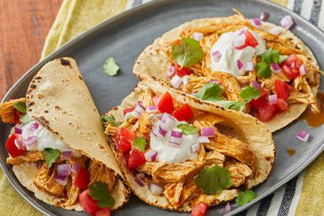

Tacos

Fiesta slow cooker shredded chicken tacos
Is it taco Tuesday? Or maybe it’s taco Monday or taco Saturday? Tacos make a simple dinner any day of the week. At my house, nobody ever has any complaints about taco night. Tacos with chicken are a slightly out of the ordinary way to serve tacos, especially if you’re more of a ground beef taco kind of family. We always enjoy Baked Chicken Tacos, but these are a bit different. Pulled chicken tacos are a taco option with less fat than beef tacos, and they are packed with bold Mexican flavors. You’ve come to the right place if you are looking for a chicken for tacos recipe.
Ingredients needed
- Chicken breast
- Onion
- Garlic
- Taco seasoning
- Salsa
Steps
- Poach chicken: Place chicken breasts in a saucepan, and cover with water. Bring to a boil, then reduce the heat to a simmer for 10-12 minutes or until the internal temperature of the chicken reaches 165°F/74°C.
- Shred Chicken: Remove the chicken to a cutting board and shred it using two forks.
- Make Chicken Taco Sauce: In a skillet, heat oil and sauté the onion until it’s soft and translucent. Then add the garlic and sauté for just 30 seconds. Add cumin, chilli powder, and salt. Cook for 1 minute to combine. Add salsa, and cook to warm through.
- Add Chicken: Add the shredded chicken to the sauce. Simmer for 2-3 minutes.
- Serve: Serve chicken tacos in warmed tortillas or taco shells with your favorite toppings.
More recipes